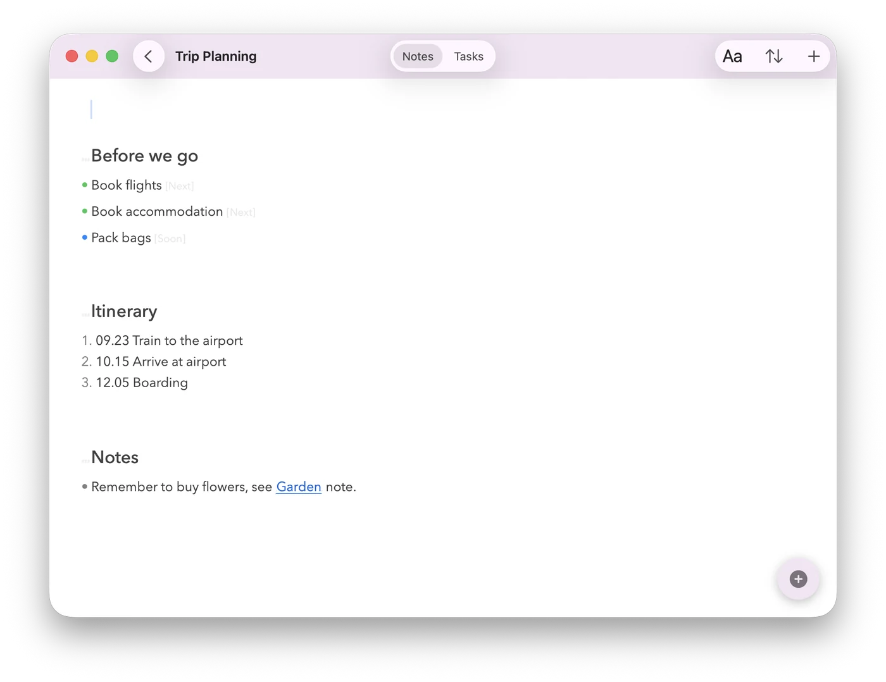
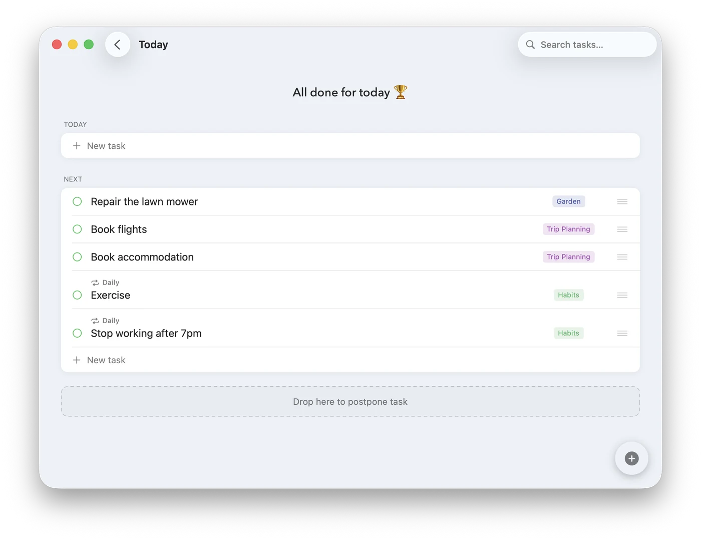
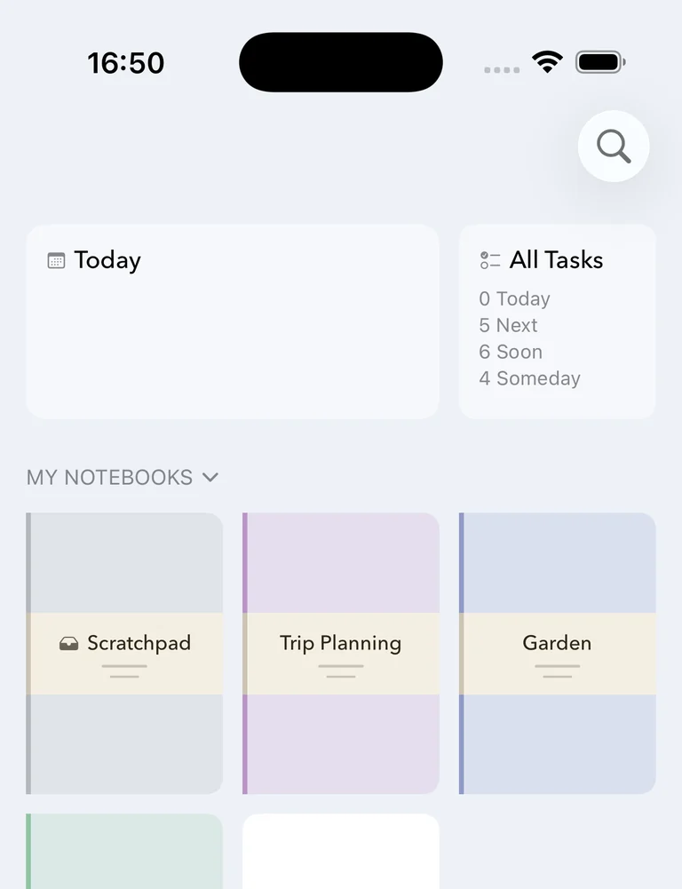
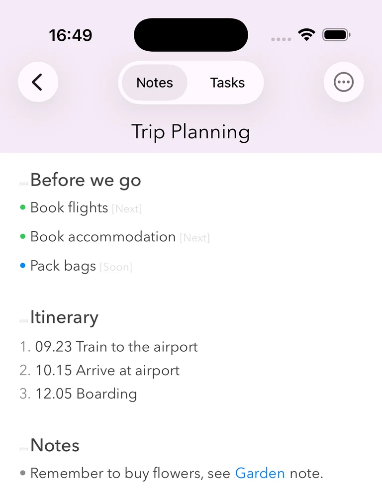
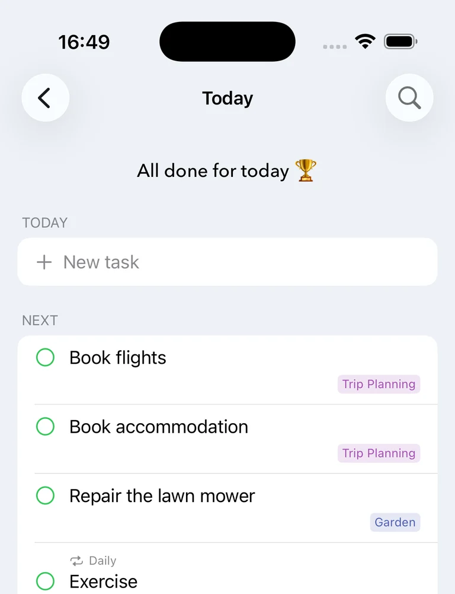

Subnotes is a plain-text notes and to-do list app for iPhone, iPad & Mac. Any line you write can become a task.


Notes and tasks side by side, so there is no second app to keep in sync.

Type five lines and you have five tasks — no forms, no adding them one at a time.

Organize tasks by what happens Next, Soon, or Someday. Most things don't have a due date.

Plain text, export any time, private sync over your own iCloud on iPhone, iPad & Mac.
Yes — one download on the App Store, free, and it works across iPhone, iPad & Mac.
Privately, over your own iCloud account — no signup, no server that can see your notes.
Always — everything is stored as plain text, not a proprietary format, so nothing is locked in.
Both, and that's the point. You write in plain text, and any line can become a task with a priority and a date — so your notes and your to-do list are the same document instead of two apps you keep in sync by hand.
Yes. Your notes live on your device, so everything works with no connection at all. iCloud syncs the changes across your devices whenever you're back online.
Yes — Subnotes is one universal app for iPhone, iPad and Mac. A single free download covers all three, and the same notebooks appear on each.
Notes are stored as plain text, and you can import and export them as Markdown files at any time, straight to the Files app or Finder.
No. There's no signup, no password and no server of ours — syncing runs through your own iCloud account, which you already have.
Subnotes is free on the App Store — one download, works on iPhone, iPad & Mac.
Download on the App Store